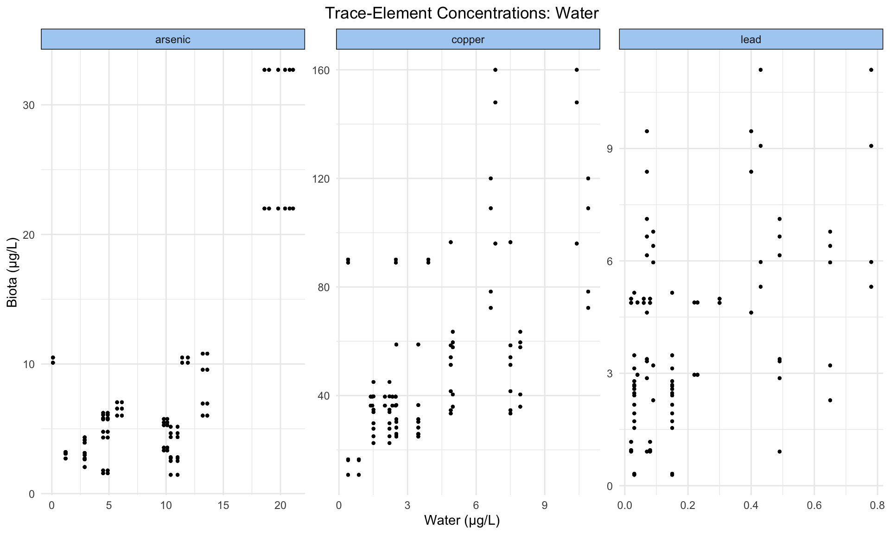
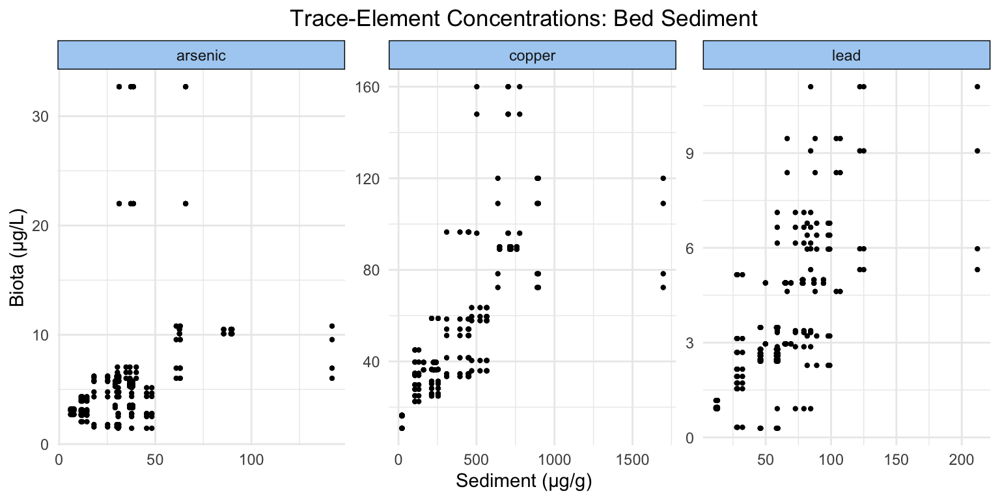
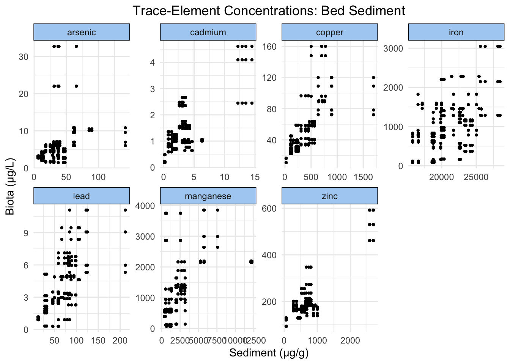
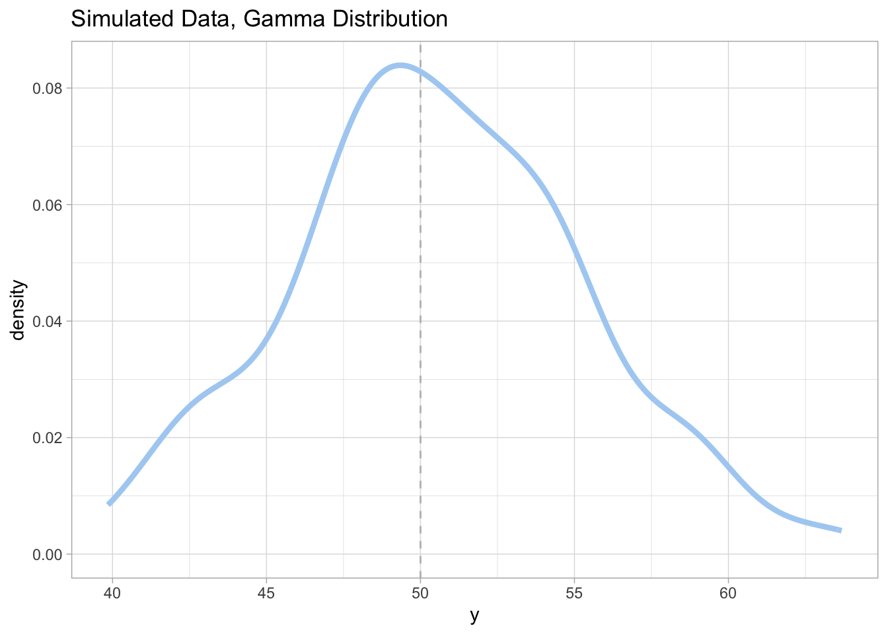
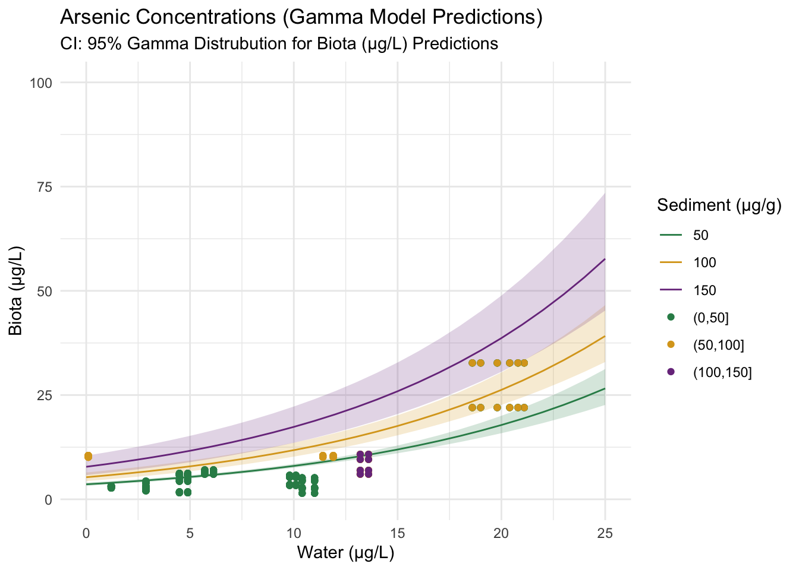
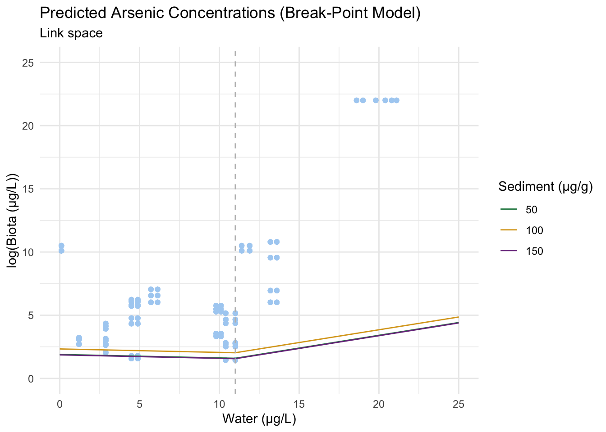
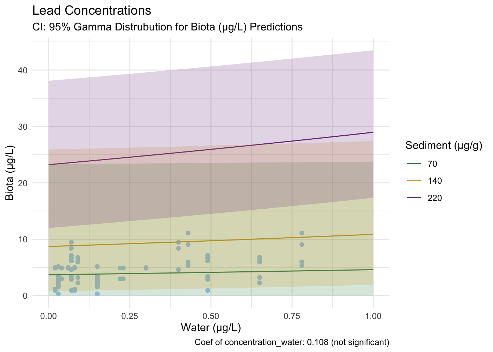

The following blog post narrates a statistical analysis performed on water-quality, bed-sediment, and invertebrate tissue trace-element concentrations for tributaries in the Clark Fork Basin, Montana. The use of the gamma and segmented statistical models aims to confirm or deny the presence of a break-point at which a potential relationship between invertebrate and water trace-element concentrations changes.
Results such as these have the potential to influence policy decisions regarding water ecosystem rehabilitation, signficant after years of mining and industry pollution in the area.
Clark Fork Basin Data
This data set is sourced from the USGS National Water Information System database. It contains trace-element concentration values of water, sediment, and species of small invertebrates (caddisflies and stone flies) along the tributaries of the Clark Fork Basin, Montana (collected in July 2021).

Water, bed sediment, and invertebrate tissue were sampled in streams that contain trace elements associated with historical mining and smelting activities. Large-scale mining and smelting were prevalent in the basin for more than 100 years but are now either discontinued or reduced in scale. Current (as of 2020) land uses are primarily cattle production, logging, mining, residential development, and recreation.
Concern about the toxicity of trace elements to the aquatic ecosystem and human health has resulted in a comprehensive monitoring effort by State, Federal, Tribal, and private entities to characterize the aquatic resources in the Clark Fork Basin. This effort was designed to guide and monitor remedial activities and to evaluate the effectiveness of remediation and cleanup.
Sampling methods for the three elements can be found in the original report. In this analysis, we use three elements that were tested across water, sediment, and invertebrate tissue, in an effort to explore the impact of water contamination level on the ecology and food systems of the area.
Trace-element concentration in water is treated as the main predictor variable for trace-element concentration in invertebrate tissue. This relationship was determined based on past research which used element accumulation in aquatic larvae as an indicator for water quality (Haas & Pánik 2025, Pastorino et al. 2019).

Sediment concentration acts as a source of trace-element concentration, as it stores and has the potential to release it back into water over the long term (Horowitz 1991). Species may have an effect on trace-element accumulation as it can introduce differences in metabolic function, but this will not be explored in this analysis.
Data Exploration
The following figures are useful to visualize the similarities and differences in distribution of trace-elements across the three sinks (water, sediment, and invertebrate tissue) tested, as well as provide a quick overview of the range that each trace-element spans.

It appears that copper and lead have similar distributions between all three sinks, but on widely different scales (sediment holds the most, tissue the second most, and water the least). Arsenic has a wider distribution in water than in sediment and invertebrate tissue.

Considering the axes of our plots, we can see that all of our trace-elements exist at varying ranges of concentration in both water and invertebrate tissue. Generally, there appears to be a visual positive relationship (perhaps less so in lead).

Similar to the previous figure, we can come to the conclusion that trace-elements occur at different scales. The visual positive relationship between sediment and invertegrate tissue is more obvious across trace-elements than between water and invertebrate tissue.
Why Gamma and Segmented/Breakpoint Models?
Model 1: Segmented
The segmented/break-point (or sometimes referred to as broken-line) statistical model is a regression analysis where the relationship between the response and one or more predictor variables contain a break-point at which the relationship between the response and predictor variables changes. This sort of model is common in fields such as epidemiology, occupational medicine, toxicology, and ecology, where it is of interest to assess threshold value where the effect of the covariate changes.
We will will use model in our analysis to explore whether their is a threshold value(s) at which the relationship between trace-element concentration in water and trace-element accumulation in invertebrates changes.
To test this analysis on simulated data, we can do so by feeding it data that has a known break-point, such as that below.

To follow the steps of a segmented model, we first apply a linear regression model to the data, then the segmented model.
# Run lm model on data
sample_model_seg_1 <- lm(data = sample_data, y~x)
# Run segmented model on lm (note: function comes from the R package "segmented")
sample_model_seg_2 <- segmented(sample_model_seg_1, seg.Z = ~x)If we were successful, the summary should return an estimated breakpoint at x = 50.
# Does it return a break-point of 50?
summary(sample_model_seg_2)$psi Initial Est. St.Err
psi1.x NA 50 4.045619e-15It does!
Model 2: Gamma
Y∼Gamma(μ, k),log(μ)=β0+β1x+β2(x−τ)
The segmented model must be applied to an already existing linear regression model, as it builds off of an already-analyzed relationship between the response and predictor variable(s) – segmented analysis simply determines where the analyzed relationship changes.
Therefore, for the first step of our analysis we will use a gamma distribution statistical model. It is appropriate for data that contains continuous variables that are always positive and have skewed distributions. Our data matches this description, as trace-element concentrations are never negative (and our data contains no values of 0), and higher concentrations occur less frequently than lower ones.
The gamma distribution is made up of the parameters shape and scale, which relate to the mean and variance of the data through the following formulas.
To test this analysis on simulated data, we can do so by feeding it data that has a known gamma distribution, simulated using the rgamma function. We can then confirm that our analysis worked by returning the shape and scale of the gamma model (related to dispersion, formulas below), and seeing if they match.
m <- 50 # true mean
v <- 25 # true variance
simulated_data <- data.frame(y = rgamma(n = 100, shape = (m^2)/v, scale = v/m))
model <- glm(y ~ 1,
data = simulated_data,
family = Gamma(link = "identity"))Statistical Model
Based on what we know about the Gamma and segmented models, as well as the relationship we wish explore, our model is as follows:
\[ \text{InvertConc} \sim \text{Gamma}(\mu, \sigma) \] \[ \log(\mu) = \beta_{0} + \beta_{1}\,\text{WaterConc} + \beta_{2}\,\text{WaterConc}\,\tau + \beta_{3}\,\text{LeadConc} \]
In this case, \(\tau\) represents the presence of break-point. It should also be noted that whereas a Gamma distribution uses the parameters shape and scale, a Gamma regression has the paremeters \(\mu\) (mean) and \(\sigma\) (variance). There relationships with shape and scale are:
- \(\mu\) = shape x scale
- \(\sigma\) = shape x (scale)²
Hypotheses
Through our multi-step analysis, we aim to answer the following questions:
- Does trace-element concentration in water increase trace-element concentration in macroinvertebrates?
- Is the risk of trace-element contamination/ingestion constant across the whole range of concentrations in sediment and water?
- If the risk is sediment/water-concentration dependent, does a threshold value exist?
Null Hypothesis: There is no relationship between trace-element concentration in water and biota, and therefore a breakpoint doesn’t exist.
Alternative Hypthesis: There is a positive relationship between trace-element concentration in water and biota, and a breakpoint does exist.
The Analysis
This blog post will only feature the code for the trace-element arsenic, but the same steps can be applied to each trace-element (with the exception of values that correspond to range), and will be included in the interpretation section below.
As stated above, we explore the effect of trace-element concentration in water on the corresponding concentration in biota tissue, controlling for sediment concentration.
Step 1: Generating models from original data.
# Run gamma model on arsenic data
conc_model_gamma <- glm(concentration_biota ~ concentration_water + concentration_sediment,
data = conc_arsenic,
family = Gamma(link = "log")) # Log as link function to account for exponential nature of data
# Run segmented model on gamma model (note: segmented function comes from the "segmented" R package)
conc_model_seg <- segmented(obj = conc_model_gamma, seg.Z = ~ concentration_water + concentration_sediment)Step 2: Applying models to generated values.
# Create prediction grid with levels of water and sediment concentrations
pred_grid <- expand_grid(concentration_water = 0:30,
concentration_sediment = 0:150)
# Applying gamma model to simulated values
conc_model_gamma_se <- predict(object = conc_model_gamma,
newdata = pred_grid,
type = "link", # stay in link space
se.fit = TRUE)
# Apply segmented model to simulated values
conc_model_seg_se<- predict(object = conc_model_seg,
newdata = pred_grid,
type = "link", # stay in link space
se.fit = TRUE)Step 3: Using predicted values to plot Gamma distribution.
The following code extracts the predicted concentrations from conc_model_gamma_se results, as well as the 95% confidence intervals for both the predicted values and our real data.
# Add data columns corresponding to predicted values
# Starting in link space and then using exp() to get to response space
concentration_pred <- pred_grid %>%
mutate(
# log of predicted concentration values
log_conc = conc_model_gamma_se$fit,
# 95% CI of concentration predictionvalues in link space
log_conc_se = conc_model_gamma_se$se.fit,
log_conc_lwr = qnorm(0.025, mean = log_conc, sd = log_conc_se),
log_conc_upr = qnorm(0.975, mean = log_conc, sd = log_conc_se),
# undo the link function -- in this case log -- using exp()
conc = exp(log_conc),
conc_lwr = exp(log_conc_lwr),
conc_upr = exp(log_conc_upr))
# Calculate shape and scale for gamma distribution ribbons in plot
shape <- (concentration_pred$conc^2)/var(concentration_pred$conc)
scale <- var(concentration_pred$conc)/concentration_pred$conc
# 95% CI of actual data (using gamma distribution)
concentration_pred <- concentration_pred %>%
mutate(
conc_lwr_gamma = qgamma(0.025, shape = shape, scale = scale),
conc_upr_gamma = qgamma(0.975, shape = shape, scale = scale))
The plots below are an intermediary step before the application and plotting of the segmented model.
Step 4: Use predicted values to plot segmented distribution.
In a similar manner to the code above, columns are added to the prediction grid using the results of conc_model_seg_se. The following plot is created, with a break-point at x = 11.
The segmented model is typically presented in log space, as it is the log of the response variable that appears like linear piece-wise function (ie., as a break-point).

To better visualize the gamma relationship we are exporing, response space is plotted below (the same breakpoint is visible, but now the relationship between predictor and response is not linear, but exponential).

Interpretation
Visually, it appears that both a positive relationship and a break-point exist between arsenic concentration in water and biota. To confirm, we can take a look at the model summary outputs.
# Return the coefficients and their statistical significance
conc_model_gamma$coefficients (Intercept) concentration_water concentration_sediment
0.892054351 0.080041313 0.007746623 # Return break-points
conc_model_seg$psi Initial Est. St.Err
psi1.concentration_water NA 11.00022 0.3708171
psi1.concentration_sediment NA 89.39980 4.9240715# Return coefficients before and after breakpoints
conc_model_seg$coefficients (Intercept) concentration_water
1.21467466 -0.02732520
concentration_sediment U1.concentration_water
0.01361267 0.22931590
U1.concentration_sediment psi1.concentration_water
-0.02302061 0.00000000
psi1.concentration_sediment
0.00000000 These outputs correspond to the questions we asked at the beginning:
- Does trace-element concentration in water increase trace-element concentration in invertebrates?
The concentration_water coefficient of our gamma model returns a value of 0.08, which is significant at a 99% confidence level. We can reject our null hypothesis that there is no relationship between water and invertebrate trace-element concentration.
- Is the risk of trace-element contamination/ingestion constant across the whole range of concentrations in sediment and water?
- If the risk is sediment/water-concentration dependent, does a threshold value exist?
Our segmented model returns a break-point of concentration_water = 11. Additionally, the slopes before and after the break-point (-0.03 and 0.23 respectively) are both significant at the 99% confidence level. Thus, we can reject the second part of our null hypothesis, that the relationship between trace-element water and invertebrate concentration stays consistent across all values.
Other Trace-Elements
Plots of the remaining trace-elements – copper and lead – are below with their corresponding break-point and gamma coefficient values.
Copper
Gamma Model

Break-point Model

From these figures and the coefficients produced by the model, we reject our null hypothesis that there is no relationship between copper concentration in water and invertebrate tissue. Additionally, we reject the null hypothesis that there is no break-point at which the relationship between the response and predictor changes.
Due to the significance of our Gamma model coefficient, we can say that the probability that this relationship occurred by chance is incredibly low.
Lead
Gamma Model

Break-point Model

From these figures and the coefficients produced by the model, we fail reject our null hypothesis that there is no relationship between lead concentration in water and invertebrate tissue. However, we can reject the null hypothesis that there is no break-point at which the relationship between the response and predictor changes, as the segmented model still identified one. Because it was based on an insignificant model, we must be cautious using these results.
Conclusion
In this blog post, we walked through how to simulate data for as well as run the gamma and segmented statistical models on trace-element data from the Clark Fork Basin in Montana.
In our analysis, we explored three elements – arsenic, copper, and lead – that when accumulated at high levels, have significant detrimental impact on aquatic ecosystems (especially as their concentrations increase up the food web). Our results that arsenic and copper both contain break-point values at which their accumulation in invertebrate tissue changes in rate based on their concentrations in water. In arsenic this change is a positive one, whereas in copper the relationship levels off. We found no significant relationship between lead concentration in water and invertebrate tissue.
In terms of habitat remediation, recommendations based on these results could include paying particular attention to arsenic concentrations in the water.
References
Haas & Pánik 2025
Pastorino et al. 2019
The original paper
database